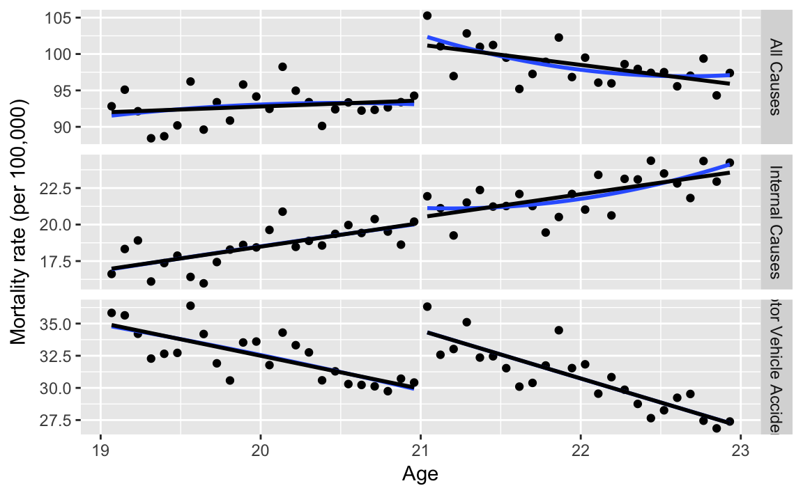

4 MLDA Regression Discontinuity
MLDA Regression Discontinuity (based on data from Carpenter and Dobkin (2011)) from Chapter 4 of Mastering ’Metrics, Table 4.1 and Figures 4.2, 4.4, and 4.5 in Mastering Metrics. These present sharp RD estimates of the effect of the minimum legal drinking age (MLDA) on mortality.
Load libraries.
library("tidyverse")
library("haven")
library("rlang")
library("broom")
library("lmtest")
library("sandwich")Load MLDA data
Add an indicator variable for individuals over 21 years of age.
Add a variable for other causes of death.
For “all causes”, “motor vehicle accidents”, and “internal causes” deaths plot the linear and quadratic trends on each side of age 21.
varlist <- c("all" = "All Causes",
"mva" = "Motor Vehicle Accidents",
"internal" = "Internal Causes")mlda %>%
select(agecell, over21, one_of(names(varlist))) %>%
gather(response, value, -agecell, -over21, na.rm = TRUE) %>%
mutate(response = recode(response, !!!as.list(varlist))) %>%
ggplot(aes(x = agecell, y = value)) +
geom_point() +
geom_smooth(mapping = aes(group = over21), se = FALSE, method = "lm",
formula = y ~ poly(x, 2)) +
geom_smooth(mapping = aes(group = over21), se = FALSE, method = "lm",
formula = y ~ x, color = "black") +
facet_grid(response ~ ., scales = "free_y") +
labs(y = "Mortality rate (per 100,000)", x = "Age")
responses <- c("all" = "All deaths",
"mva" = "Motor vehicle accidents",
"suicide" = "Suicide",
"homicide" = "Homocide",
"ext_oth" = "Other external causes",
"internal" = "All internal causes",
"alcohol" = "Alcohol")Define a function to run four regressions for a given response variable, y.
run_reg <- function(y) {
mods <- list(
"Ages 19-22, Linear" =
lm(quo(!!sym(y) ~ age * over21), data = mlda),
"Ages 19-22, Quadratic" =
lm(quo(!!sym(y) ~ poly(age, 2, raw = TRUE) * over21), data = mlda),
"Ages 20-21, Linear" =
lm(quo(!!sym(y) ~ age * over21),
data = filter(mlda, agecell >= 20, agecell <= 22)),
"Ages 20-21, Quadratic" =
lm(quo(!!sym(y) ~ poly(age, 2, raw = TRUE) * over21),
data = filter(mlda, agecell >= 20, agecell <= 22))
)
out <- tibble(
model_name = names(mods),
model = mods,
ages = rep(c("19-22", "20-21"), each = 2),
trend = rep(c("Linear", "Quadratic"), 2),
model_num = seq_along(mods)
) %>%
mutate(coefs = map(model, ~ tidy(coeftest(.x, vcovHC(.x))))) %>% # nolint
unnest(coefs, .drop = FALSE) %>%
filter(term == "over21") %>%
select(model_name, model, term, estimate, std.error) %>%
mutate(response = y)
# sample size = df.residuals + residuals
out[["obs"]] <- map_dfr(mods, glance) %>%
mutate(obs = df.residual + df) %>%
pluck("obs")
out
}
mlda_regs <- map_dfr(names(responses), run_reg) %>%
mutate(response = recode(response, !!!as.list(responses)))mlda_regs %>%
select(model_name, response, estimate, std.error) %>%
gather(stat, value, estimate, std.error) %>%
spread(model_name, value) %>%
knitr::kable()| response | stat | Ages 19-22, Linear | Ages 19-22, Quadratic | Ages 20-21, Linear | Ages 20-21, Quadratic |
|---|---|---|---|---|---|
| Alcohol | estimate | 0.442 | 0.799 | 0.740 | 1.028 |
| Alcohol | std.error | 0.213 | 0.431 | 0.360 | 0.725 |
| All deaths | estimate | 7.663 | 9.548 | 9.753 | 9.611 |
| All deaths | std.error | 1.374 | 2.231 | 2.279 | 3.565 |
| All internal causes | estimate | 0.392 | 1.073 | 1.692 | 1.249 |
| All internal causes | std.error | 0.592 | 0.931 | 0.877 | 1.465 |
| Homocide | estimate | 0.104 | 0.200 | 0.164 | -0.453 |
| Homocide | std.error | 0.394 | 0.604 | 0.590 | 1.594 |
| Motor vehicle accidents | estimate | 4.534 | 4.663 | 4.759 | 5.892 |
| Motor vehicle accidents | std.error | 0.731 | 1.366 | 1.385 | 1.937 |
| Other external causes | estimate | 0.838 | 1.797 | 1.414 | 1.625 |
| Other external causes | std.error | 0.413 | 0.673 | 0.606 | 1.245 |
| Suicide | estimate | 1.794 | 1.814 | 1.724 | 1.297 |
| Suicide | std.error | 0.530 | 0.950 | 0.881 | 1.661 |
| The robust standard errors | using the H | C3 standard errors fr | om | ||
sandwich::vcovHC and dif |
fer from tho | se reported in *Maste | ring ’Metrics*. |